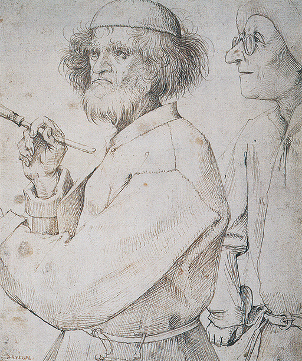

18
UNA CRISIS EN EL ARTE
Europa, segunda mitad del siglo XVI
Hacia 1520, todos los amantes del arte, en las ciudades italianas, parecían estar de acuerdo en que la pintura había alcanzado su cima de perfección. Hombres como Miguel Ángel y Rafael, Ticiano y Leonardo habían conseguido plenamente algo que sólo pudo ser intentado por las generaciones anteriores. Ningún problema de dibujo les parecía demasiado difícil, ni demasiado complicado ningún tema. Ellos demostraron cómo se podían combinar la belleza y la armonía con la corrección, e incluso sobrepasaron —así se decía— a las más famosas estatuas griegas y romanas en su dominio de los detalles. Para un muchacho que deseara llegar a ser algún día un gran pintor, esta generalizada opinión no debía resultar del todo halagüeña. Por mucho que admirara las obras maravillosas de los grandes maestros de su época, debía preguntarse si efectivamente algo quedaba aún por hacer, puesto que todo lo posible en arte se había conseguido ya. Algunos parecieron aceptar esta idea como inevitable y se aplicaron con ahínco al estudio de cuanto llegó a saber Miguel Ángel, e imitaron lo mejor que pudieron su estilo. ¿Que a Miguel Ángel le complacía dibujar desnudos en posturas complicadas? Bien, si esto era lo que tenía que hacerse, ellos copiarían sus desnudos y los introducirían en sus cuadros, encajaran o no. Los resultados fueron un tanto ridículos: los temas sagrados de la Biblia se llenaron de lo que parecían equipos de jóvenes atletas en perfecta forma. Críticos posteriores, que vieron que esos pintores jóvenes se frustraron simplemente porque imitaron la manera más que el espíritu de las obras de Miguel Ángel, denominaron época del manierismo al período en que estuvo en vigor esta moda. Pero no todos los jóvenes artistas de entonces llegaron a ofuscarse tanto que haya que creer que cuanto recibió el nombre de arte era una colección de desnudos en actitudes difíciles. Muchos, en realidad, dudaron de que el arte hubiera llegado a un punto muerto; si no era posible, después de todo, sobrepasar a los maestros famosos de la generación anterior en cuanto a su dominio de las formas humanas, tal vez lo fuese en algún otro aspecto. Algunos quisieron sobrepasarles en sus concepciones, pintar cuadros llenos de sentido y de sabiduría, de una sabiduría que, en realidad, quedaría oscura, salvo para los más eruditos. Sus obras casi parecen enigmas gráficos, que no podían ser resueltos sino por aquellos que conocían lo que los eruditos de la época creían verdadero sentido de los jeroglíficos egipcios y de muchos de los semiolvidados escritores antiguos. Otros, también, deseaban llamar la atención haciendo sus obras menos naturales, menos claras, sencillas y armoniosas que las de los grandes maestros. Tales obras —parecían argüir— son perfectas, pero la perfección no siempre resulta interesante. Una vez que os habéis familiarizado con ella, deja de emocionaros. Nosotros nos encaminaremos a lo extraordinario, a lo inesperado, a lo inaudito. Había claro está, algo un tanto enfermizo en esta obsesión de los artistas jóvenes por sobrepasar a los maestros clásicos, y que conducía, incluso a los mejores, a experimentos extraños y artificiosos. Pero, en cierto modo, esos frenéticos esfuerzos de superación constituían el mejor tributo que podían pagar a los viejos artistas. ¿No había dicho el mismo Leonardo: «Infeliz del artista que no supera a su maestro»? Hasta cierto punto, los grandes artistas ya clásicos habían iniciado y favorecido nuevas y desacostumbradas experiencias; su misma fama y el crédito de que disfrutaron en sus últimos años les permitió intentar la consecución de efectos nuevos y heterodoxos en la composición o en el colorido, explorando nuevas posibilidades artísticas. Miguel Ángel, especialmente, manifestó de cuando en cuando un osado desdén contra todos los convencionalismos, y más que nada en arquitectura, donde a veces abandonó las sacrosantas normas de la tradición clásica para seguir su propio temperamento y su fantasía. Hasta cierto punto, fue él quien acostumbró al público a admirar los caprichos e invenciones de un artista, y quien dio el ejemplo de un genio que no se satisfacía con la incomparable perfección de sus obras maestras, sino que constante e incansablemente investigaba nuevos modos y fórmulas de expresión.
Era lo más natural que los artistas jóvenes vieran en ello un permiso para asombrar al público con sus propias invenciones originales. Sus esfuerzos condujeron a fragmentos curiosos, como la ventana en forma de rostro (ilustración 231) proyectada por un arquitecto y pintor, Federico Zuccaro (1543?-1609) que da buena idea de esta clase de capricho.
231 Federico Zuccaro. Ventana del Palacio Zuccari, Roma, 1392.
Otros arquitectos, por el contrario, prefirieron ostentar su gran formación y su conocimiento de los autores clásicos, sobrepasando, en efecto, a la generación de Bramante. El mayor y más culto de esos arquitectos fue Andrea Palladio (1508-1580). La ilustración 232 muestra su famosa Villa Rotonda en las proximidades de Vicenza. En cierto modo se trata también de un capricho, pues posee cuatro lados idénticos, cada uno de los cuales tiene un pórtico a la manera de la fachada de un templo, agrupados en torno a un espacio central que recuerda el Panteón romano (ilustración 75). Por bella que pueda resultar la combinación, se trata de un edificio en el cual difícilmente nos gustaría vivir. La persecución de la novedad y el efectismo se habían interpuesto a la finalidad propia de la arquitectura.
232 Andrea Palladio. Villa Rotonda, cerca de Vicenza, 1550. Villa italiana del siglo XVI.
Un artista típico de este período fue el escultor y orfebre florentino Benvenuto Cellini (1500-1571). Cellini relató su propia vida en un libro famoso que ofrece un retrato vívido y lleno de color de su época. Fue jactancioso, pendenciero y lleno de vanidad, pero no podemos tomárselo a mal, porque narra la historia de sus aventuras y hazañas con tanto ingenio que se diría, al leerlas, que se trata de una novela de Dumas. Por su vanidad y amor propio, así como por la inquietud que le llevó de ciudad en ciudad y de corte en corte, provocando querellas y conquistando laureles, Cellini es un auténtico producto de su tiempo. Para él, ser artista no consistía ya en constituirse en respetable y sedentario dueño de un taller, sino en un virtuoso por cuyo favor debían competir príncipes y cardenales. Una de las escasas obras suyas que han llegado hasta nosotros es un salero de oro que hizo para el rey de Francia, en 1543 (ilustración 233). Cellini nos lo cuenta con gran lujo de detalles. Vemos cómo desairó a dos famosos eruditos que se aventuraron a sugerirle un tema, y cómo realizó un modelo en yeso de su propia creación que representa a la tierra y el mar. Para que se viera que uno y otro se compenetran, entrelazó las piernas de las dos figuras: «El mar en forma de hombre sostiene un barco finamente labrado que puede contener bastante sal; debajo puse cuatro caballos marinos, y a la figura le di un tridente. La tierra en forma de una hermosa mujer, tan graciosa como me fue posible. A su lado coloqué un templo ricamente adornado para poner la pimienta.» Pero toda esta sutil invención resulta menos interesante de leer que la historia de cuando transportó el oro que le dio el tesorero del Rey y fue atacado por cuatro bandidos a los que él solo hizo huir. A algunos de nosotros, la elegancia suave de las figuras de Cellini puede parecernos un tanto afectada y artificiosa. Tal vez sea un consuelo saber que su autor poseyó toda la saludable robustez que parece faltarle a su obra.
233 Benvenuto Cellini, Salero, 1543. Oro cincelado y esmalte sobre base de marfil, 33,5 cm de largo; Museo de Arte Histórico, Viena.
El punto de vista de Cellini es típico de los intentos infatigables y agotadores de crear algo más interesante y poco frecuente que lo realizado por la generación anterior. Este mismo espíritu lo hallamos en uno de los cuadros de uno de los discípulos de Correggio, Parmigianino (1503-1540). Comprendemos que algunos encuentren su Virgen (ilustración 234) un tanto desagradable por la afectación y artificiosidad con que el tema religioso está tratado. No hay nada en este cuadro de la naturalidad y sencillez con que Rafael plasmó el viejo tema. El cuadro recibió el nombre de La Madona del cuello largo, porque el pintor, en su afán de hacer que la Virgen pareciese graciosa y elegante, le puso un cuello como el del cisne. Adelgazó y alargó las proporciones del cuerpo humano de rara y caprichosa manera. La mano de la Virgen, con sus dedos largos y delicados, la prolongada pierna del ángel en primer término, el enjuto y macilento profeta con un rollo de pergamino, todo parece visto en un espejo deformante. Y sin embargo, no cabe duda de que el artista consiguió este efecto no por ignorancia ni abandono, sino por poner sumo cuidado en hacernos ver que le gustaban esas formas antinaturales y alargadas, pues, para asegurar más el efecto que se proponía conseguir, colocó una enorme columna de las mismas fantásticas proporciones en el fondo del cuadro. En la composición nos puso también de manifiesto que no creía en armonías convencionales. En vez de distribuir las figuras acopladas a ambos lados de la Virgen, amontonó un apretado grupo de ángeles en un estrecho rincón, y dejó el otro lado abierto ampliamente hacia el fondo para mostrarnos la alta figura del profeta, tan reducida de tamaño por la distancia que apenas llega a la rodilla de la Virgen. No cabe duda, pues, que si esto era una manía, había método en ella. El pintor deseaba ser heterodoxo, demostrar que la solución clásica de la armonía perfecta no era la única concebible, que la simplicidad natural es uno de los medios de conseguir la belleza, pero que existen otros medios directos de conseguir efectos interesantes para los amantes del arte no tan primitivos. Gústenos o no la senda emprendida por él, tenemos que admitir que era consistente. En realidad, Parmigianino y todos los artistas de esa época que deliberadamente trataron de crear algo nuevo e inesperado, aun a costa de la belleza natural establecida por los grandes maestros, acaso sean los primeros artistas modernos. Ya veremos que lo que ahora llamamos arte moderno puede tener sus raíces en un imperativo análogo de soslayar lo vulgar y conseguir efectos que se diferencien de la belleza natural convencional.
234 Parmigianino, La Madona del cuello largo, 1534-1540. Inconcluso por la muerte del artista. Óleo sobre tabla, 216 x 132 cm; Galería de los Uffizi, Florencia.
Otros artistas de este extraño período, a la sombra de los gigantes del arte, desesperaron menos de sobrepasarles, ateniéndose a un criterio normal de destreza y virtuosismo. Podemos no estar de acuerdo con cuanto realizaron, pero aquí también nos vemos obligados a admitir que algunos de sus esfuerzos fueron muy sobresalientes. Un ejemplo típico es la estatua de Mercurio, el mensajero de los dioses, de un escultor flamenco, Jean de Boulogne (1529-1608), al que los italianos llamaron Giovanni da Bologna o Giambologna (ilustración 235), quien se propuso conseguir lo imposible: una estatua que superase la gravedad de la materia inerte y creara la sensación de un rápido vuelo por el aire. Y hasta cierto punto lo consiguió. Su famoso Mercurio sólo con la punta de uno de sus dedos toca en tierra, y más que en ésta, en un chorro de aire que sale de la boca de un rostro que representa al viento sur. Toda la estatua está equilibrada con tanto tino que parece realmente flotar en la atmósfera, y deslizarse por ella graciosa y velozmente. Tal vez un escultor clásico, o incluso Miguel Ángel, hubiera juzgado un efecto semejante impropio de una estatua que debía recordar un pesado bloque de la materia con que se formó, pero Giambologna, no menos que Parmigianino, prefirió desafiar esas normas establecidas y mostrar los sorprendentes efectos que era capaz de conseguir.

235 Giambologna, Mercurio, 1580. Bronce, 187 cm de altura; Museo Nacional del Bargello, Florencia.
Quizá el más grande de todos estos maestros de la última mitad del siglo XVI vivió en Venecia. Se llamó Jacopo Robusti, apodado Tintoretto (1518-1594). También él se hastió de la sencilla belleza de formas y colores que Ticiano había revelado a los venecianos, pero su descontento debió ser algo más que un mero deseo de realizar lo insólito. Parece haber advertido que, pese a ser Ticiano un incomparable pintor de la belleza, sus cuadros tendían a ser más agradables que emotivos, no impresionando lo suficiente como para que los grandes relatos de la Biblia y de las leyendas sacras adquirieran vida para el contemplador. Si estuvo en lo cierto o no, de todos modos debió resolver plasmar esos relatos de manera distinta, haciendo que el espectador sintiese el drama intenso y conmovedor de los acontecimientos que pintó. La ilustración 236 pone de manifiesto que realmente triunfó al hacer que sus cuadros fueran insólitos y cautivasen. A primera vista, tal pintura parece confusa y desconcertante. En lugar de una clara distribución de las figuras principales en la superficie del cuadro, como lo consiguiese Rafael, penetramos en la profundidad de una bóveda extraña; vemos a un hombre de gran estatura, con la cabeza nimbada, en la esquina de la izquierda, levantando el brazo como para detener algo que está sucediendo y, si seguimos su ademán, podemos ver que éste se relaciona con lo que ocurre arriba, bajo la cornisa de la bóveda, en el otro lado del cuadro. Allí, dos hombres están descendiendo un cadáver de un sepulcro, el cual tiene la tapa levantada, y un tercero, con turbante, les ayuda, mientras un caballero, en el fondo, y a la luz de una antorcha, trata de leer la inscripción de otra sepultura. Estos hombres, evidentemente, se hallan expoliando una catacumba. Uno de los cadáveres está extendido en el suelo sobre una alfombra, en violento escorzo, mientras un respetable anciano vestido suntuosamente se arrodilla ante él y lo contempla. En el extremo de la derecha hay un grupo de hombres y mujeres, llenos de terror y mirando con asombro al santo, pues la figura nimbada de la izquierda tiene que ser un santo. Si observamos más atentamente, veremos que éste tiene un libro: es san Marcos, el evangelista, patrono de Venecia. ¿Qué significa tal escena? El cuadro representa el tema de las reliquias de san Marcos, que fueron traídas de Alejandría (la ciudad de los «infieles» musulmanes) a Venecia, donde para albergarlas se construyó el famoso sepulcro de la iglesia de San Marcos. Este último fue obispo de Alejandría, siendo enterrado en una de las catacumbas allí existentes. Cuando los venecianos penetraron en ella para cumplir el difícil y piadoso encargo de descubrir el cuerpo del santo, pensaron cuál de las muchas catacumbas contendría las preciadas reliquias. Pero cuando toparon con la verdadera, san Marcos apareció de pronto, revelando así el lugar donde reposaban los restos de su existencia terrena. Éste es el momento elegido por Tintoretto. El santo ordena a los hombres que no continúen registrando las tumbas. Su cuerpo ha sido hallado; yace a sus pies bañado por la luz, y con su sola presencia ya está obrando milagros. El hombre atormentado que aparece a derecha es liberado del demonio que lo poseía, y a éste lo vemos salir de la boca de aquél en forma de nube de humo. El noble arrodillado en prueba de gratitud y adoración es el donante, miembro de la cofradía religiosa que había encargado el lienzo. Sin duda alguna, el cuadro debió parecer a los contemporáneos heterodoxo y excéntrico; debieron quedar un tanto impresionados por los intensos contrastes de luz y sombra, de proximidad y lejanía, y de falta de equilibrio en movimiento y ademanes. Sin embargo, pronto debieron darse cuenta de que, con los métodos corrientes, Tintoretto no podría haber creado la impresión terrible del misterio que se desarrolla ante nuestros ojos. Para dar cima a su propósito, Tintoretto incluso sacrificó aquella suave belleza de colorido que fue la conquista de que más se envaneció la escuela veneciana de Giorgione y Ticiano.
236 Tintoretto, El hallazgo de los restos de san Marcos, h. 1562. Óleo sobre lienzo, 405 x 405 cm; Pinacoteca de Brera, Milán.
Su cuadro de san Jorge luchando con el dragón, que se halla en Londres (ilustración 237), muestra cómo la fantástica claridad y los tonos quebrados aumentan la sensación de tirantez y conmoción. Aquí se aprecia que el drama ha alcanzado su clímax. La princesa parece salirse del cuadro en dirección al espectador, mientras que el héroe, contra todas las reglas, ha sido trasladado al fondo de la atormentada escena.
237 Tintoretto, San Jorge y el dragón, h.1555-1558. Óleo sobre lienzo, 157,5 x 100,3 cm; National Gallery, Londres.
Giorgio Vasari (1511-1574), el gran crítico y biógrafo florentino de la época, escribió de Tintoretto que «si no hubiera abandonado el camino usual y hubiera seguido el hermoso estilo de sus predecesores, habría llegado a ser uno de los mayores pintores vistos en Venecia». Tal como fue, Vasari consideró que sus obras se echaron a perder por la ejecución descuidada y el gusto excéntrico. Le desconcertó lo inacabado de las obras de Tintoretto. «Sus esbozos —dice— son tan rudos que los trazos de su lápiz revelan más vigor que reflexión, pareciendo obedecer a la casualidad.» Es éste un reproche que, mucho más adelante, se ha dirigido con frecuencia a los artistas modernos. Acaso no deba sorprender del todo, pues los grandes innovadores del arte se concentraron a menudo en las cosas esenciales sin preocuparse por la técnica en el sentido corriente. En épocas como la de Tintoretto, el dominio de la técnica alcanzó tanta altura y se generalizó tanto que cualquiera con alguna aptitud mecánica podía adueñarse de muchos de sus recursos. Un artista como Tintoretto quiso mostrar las cosas a una nueva luz, explorando otros modos de representar los mitos y leyendas del pasado. Consideró completo un cuadro cuando tradujo su visión de esta legendaria escena. Un acabado unido y esmerado no le interesó por no servir a sus fines. Por el contrario, tal cosa podía distraer la atención del dramático acontecimiento que sucedía en el cuadro. Acostumbró, pues, a dejarlo así, haciendo que la gente se asombrara.
Durante el siglo XVI, nadie llevó tan lejos un procedimiento semejante como un pintor de la isla griega de Creta, Domenikos Theotokopoulos (1541?-1614), llamado El Greco. Llegó a Venecia procedente de un lejano lugar que no había desarrollado ninguna especie de arte durante el medievo. En su país natal debió acostumbrarse a ver las imágenes de los santos, solemnes, en actitudes rígidas y sin ninguna semejanza de apariencia natural, según la manera bizantina. No habiendo sido educado para perseguir la corrección del dibujo, no halló nada horrible en el arte de Tintoretto, sino que lo encontró fascinante. También él fue, al parecer, un hombre apasionado y fervoroso, y sintió la necesidad de plasmar los temas sagrados de manera distinta y llena de agitación. Tras su estancia en Venecia se estableció en Toledo, España, donde no era fácil que le distrajeran o molestaran los críticos exigiéndole un dibujo correcto y natural, ya que en España persistían en grado elevado las ideas medievales acerca del arte. Esto puede explicar por qué el arte de El Greco supera incluso al de Tintoretto en su atrevido desdén hacia las formas y colores naturales, así como en sus dramáticas y agitadas visiones. La figura 238 muestra uno de sus cuadros más arrebatados y sugestivos. Representa un pasaje del Apocalipsis de san Juan, siendo a éste al que vemos en uno de los lados contemplando en trance el cielo y levantando sus brazos en actitud profética.
El pasaje del Apocalipsis a que se refiere es aquél en el que el Cordero intima a san Juan a que llegue y vea la apertura de los siete sellos. El texto correspondiente, en 6, 9-11, dice:
Cuando abrió el quinto sello, vi debajo del altar las almas de los degollados a causa de la Palabra de Dios y del testimonio que mantuvieron. Se pusieron a gritar con fuerte voz: «¿Hasta cuándo, Dueño santo y veraz, vas a estar sin hacer justicia y sin tomar venganza por nuestra sangre de los habitantes de la tierra?» Entonces se le dio a cada uno un vestido blanco y se les dijo que esperasen todavía un poco, hasta que se completara el número de sus consiervos y hermanos que iban a ser muertos como ellos.
Las figuras desnudas con sus agitadas actitudes son, pues, los mártires que salen de sus tumbas y claman venganza al cielo, y adelantan sus manos para recibir de éste las blancas vestiduras. Seguramente ningún dibujo ajustado y correcto podría haber expresado esa terrible visión del día del juicio final, cuando los mismos santos clamen por la destrucción de este mundo. No resulta difícil observar que El Greco aprendió mucho del procedimiento nada ortodoxo de desequilibrar la composición empleado por Tintoretto, así como también adoptó el manierismo de alargar las figuras como en la artificiosa madona del Parmigianino (ilustración 234). Pero también advertimos que El Greco empleó este procedimiento para una nueva finalidad. Vivía en España, donde la religión poseyó un fervor místico que difícilmente se hallaría en otro lugar; en esta atmósfera, el arte artificioso del manierismo perdió mucho de su carácter como arte para coleccionistas. Aunque su obra nos sorprende por su modernidad increíble, no parece que sus contemporáneos españoles le dirigiesen ninguna objeción, como las de Vasari a la obra de Tintoretto.
238 El Greco, La apertura del quinto sello del Apocalipsis, h. 1608-1614. Óleo sobre lienzo, 224,5 x 192,8 cm; Museo Metropolitano de Arte, Nueva York.
Sus mejores retratos (ilustración 239) pueden equipararse sin duda a los de Ticiano (ilustración 212). Su estudio se hallaba siempre atareado; al parecer, empleó a numerosos ayudantes para atender los muchos encargos que recibió, lo que puede explicar por qué no todas las obras que ostentan su firma son de la misma calidad. Sólo a partir de la generación siguiente se empezó a censurar sus formas y colores antinaturales, y a mirar sus cuadros como si fuesen una broma pesada; y sólo después de la primera guerra mundial, cuando los artistas modernos nos han enseñado a no emplear el mismo criterio de corrección para todas las obras de arte, el arte de El Greco se ha vuelto a descubrir y a comprender.
239 El Greco, El hermano Hortensio Félix Paravicino, 1609. Óleo sobre lienzo, 113 x 86 cm; Museo de Bellas Artes, Boston.
En los países nórdicos, en Alemania, Países Bajos e Inglaterra, los artistas se enfrentaron con una crisis mucho más seria que sus colegas italianos y españoles. Estos últimos sólo tenían que resolver el problema de cómo pintar de un modo distinto y que causara una impresión mayor. En el norte, el problema se convirtió de pronto en si se podía y se debía continuar pintando. Esta gran crisis fue producida por la Reforma. Muchos protestantes pusieron objeciones a los cuadros y estatuas que representaban a los santos en las iglesias, considerándolos signo de la idolatría papal. De este modo, los pintores de las regiones protestantes perdieron su mejor fuente de ingresos: la de la pintura de retablos de altar. Los más estrictos entre los calvinistas rechazaron incluso lujos de otra índole, tales como las alegres decoraciones de las casas, pero hasta cuando éstas eran permitidas en teoría, la atmósfera y el estilo de las construcciones resultaban inadecuados por lo general para grandes frescos como los que los nobles italianos encargaban con el fin de adornar sus palacios. Todo lo que quedó como fuente de ingresos habitual para los artistas fue la ilustración de libros y la pintura de retratos, lo que sin duda no era suficiente para vivir.
Podemos observar los efectos de esta crisis en la carrera del mayor pintor alemán de su generación, en la vida de Hans Holbein el Joven (1497-1543). Holbein tenía veintiséis años menos que Durero y sólo tres más que Cellini. Había nacido en Augsburgo, una rica ciudad mercantil que se hallaba en estrechas relaciones con Italia, trasladándose muy pronto a Basilea, renombrado centro de la nueva cultura.
Los conocimientos que tan apasionadamente se esforzó por conseguir Durero a lo largo de su vida llegaron fácilmente a Holbein. Procedente de una familia de pintores (su padre fue un maestro tenido en mucha consideración), y hallándose extraordinariamente dotado, asimiló con prontitud los adelantos de los artistas, tanto nórdicos como italianos. Tenía poco más de treinta años cuando pintó un maravilloso cuadro de altar representando a la Virgen acompañada de los donantes, la familia del burgomaestre de Basilea (ilustración 240). Su forma fue la tradicional en todos los países, y cuya aplicación ya hemos visto en el Díptico de Wilton (ilustración 143) y en la Madona con la familia Pesaro de Ticiano (ilustración 210). Mas, con todo, el cuadro de Holbein sigue siendo uno de los exponentes más perfectos de esta clase. La manera en que están situados los donantes, en grupos, aparentemente sin esfuerzo, a ambos lados de la Virgen, cuya majestuosa y serena figura se halla enmarcada por un nicho de formas clásicas, nos hace pensar en las más armoniosas composiciones del Renacimiento italiano, de Giovanni Bellini (ilustración 208) y de Rafael (ilustración 203). La atención esmerada puesta en cada detalle, por otro lado, así como cierta indiferencia hacia la belleza convencional, nos muestran que Holbein se formó en el norte, y se halló en las mejores condiciones de convertirse en el maestro más sobresaliente de los países de habla germana, cuando la convulsión que supuso la Reforma puso fin a tales expectativas. En 1526 abandonó Suiza, para trasladarse a Inglaterra con una carta de recomendación del gran erudito Erasmo de Rotterdam. «Aquí, las artes se están congelando», escribió éste al recomendar al pintor a sus amigos, entre los cuales se hallaba sir Thomas More.
240 Hans Holbein el Joven, La Virgen y el Cristo niño con la familia del burgomaestre Meyer, 1528. Retablo, óleo sobre tabla, 146,5 x 102 cm; Schlossmuseum, Darmstadt.
Uno de los primeros encargos de Holbein en Inglaterra fue la preparación de un numeroso grupo de retratos de la familia de este otro gran erudito, conservándose aún algunos detallados estudios al respecto en el Castillo de Windsor (ilustración 241). Si Holbein confió en evadirse del tumulto de la Reforma debió quedar desengañado ante los acontecimientos posteriores, pero cuando finalmente se estableció de manera definitiva en Inglaterra, y recibió el título oficial de pintor de cámara de Enrique VIII, acabó por encontrar una esfera de actividad que le permitió vivir y consagrarse a su trabajo.
241 Hans Holbein el Joven, Anne Cresacre, nuera de sir Thomas More, 1528. Carboncillo y tizas de colores sobre papel, 37,9 x 26,9 cm; Biblioteca Real, Castillo de Windsor.
Ya no podía pintar vírgenes, pero las tareas de un pintor de cámara eran de una gran diversidad. Dibujó joyas y muebles, trajes para fiestas cortesanas y decorados para salones, armas, copas, etcétera. Su ocupación principal, no obstante, fue pintar retratos de personajes de la casa real, y a la mirada indefectible de Holbein se debe que conservemos aún un vivo reflejo de los hombres y las mujeres de la época de Enrique VIII. La ilustración 242 muestra su retrato de sir Richard Southwell, cortesano y oficial que participó en el cierre de los monasterios. No hay ningún dramatismo en estos retratos de Holbein, nada que impresione al pronto, pero cuanto más los miramos, más parecen revelarnos el espíritu y la personalidad del modelo. Ni por un momento dudamos de que constituyen, en efecto, un testimonio fidedigno de lo visto por Holbein, sin que intermediaran el temor ni el halago. La manera de colocar Holbein la figura en el cuadro muestra el seguro toque del maestro. Nada parece dejado al azar; toda la composición está tan perfectamente equilibrada que fácilmente nos puede parecer vulgar. Ésta fue la intención de Holbein. En sus primeros retratos aún trataba de desplegar su maravillosa destreza en captar los pormenores, caracterizando al modelo por medio del ambiente y de las cosas entre las que hubiese discurrido su vida (ilustración 243). Pero al avanzar en años, e ir adquiriendo mayor madurez, menos pareció necesitar su arte de estos recursos. No quiso entrometerse él mismo en el cuadro y distraer la atención centrada en el modelo, y precisamente por esta magistral y serena contención es por lo que más le admiramos.
242 Hans Holbein el Joven, Sir Richard Southwell, 1536. Óleo sobre tabla, 47,5 x 38 cm; Galería de los Uffizi, Florencia.
243 Hans Holbein el Joven, Georg Gisze, mercader alemán en Londres, 1532. Óleo sobre tabla, 96,3 x 85,7 cm; Galería de Pintura del Museo Nacional, Berlín.
Cuando Holbein abandonó los países de habla alemana, la pintura había comenzado a declinar en ellos en tremendas proporciones. Y cuando Holbein murió, las artes se hallaron en análoga situación en Inglaterra. En efecto, la única rama de la pintura que sobrevivió con la Reforma fue la del retrato, tan firmemente establecida por Holbein, pero incluso en este sector las modas del manierismo meridional se hicieron sentir cada vez más. Esos ideales de refinamiento y elegancia cortesanos desplazaron al sencillo estilo de Holbein.
244 Nicholas Hilliard, Hombre joven entre rosas, h. 1587. Acuarela y guache sobre pergamino, 13,6 x 7,3 cm; Victoria and Albert Museum, Londres.
El retrato de un joven noble isabelino (ilustración 244) da una idea de lo mejor de este nuevo tipo de retratos. Se trata de una miniatura del famoso maestro inglés Nicholas Hilliard (1547-1619), contemporáneo de sir Philip Sidney y de William Shakespeare. Realmente, este alfeñicado joven recostado lánguidamente contra un árbol, rodeado de espinosas rosas silvestres y con la mano puesta sobre el corazón, nos lleva a pensar en las pastorales de Sidney o en las comedias de Shakespeare. Tal vez la miniatura fue encargada por el joven caballero para obsequiar a la dama de sus pensamientos, pues ostenta la inscripción latina Dat poenas laudata fides, lo que aproximadamente significa «Mi inquebrantable fidelidad es causa de mi mal». No tenemos que preguntarnos si ese mal era más cierto que las espinas pintadas en la miniatura. De un joven galanteador de aquellos días se esperaba como lo más natural que exhibiera su aflicción por un amor sin recompensa. Estas imágenes y los sonetos de índole análoga formaban parte de un gracioso y artificioso juego, que nadie se tomaba demasiado seriamente, pero en el que todos querían brillar inventando variantes y nuevos refinamientos.
Si contemplamos la miniatura de Hilliard como un objeto creado para este juego, ya no nos sorprenderá tanto por su afectación y artificiosidad. Confiemos en que cuando la dama recibiera esta prueba de adoración dentro de un precioso estuche, y viese la lastimosa pose de su noble y elegante cortejador, la «inquebrantable fidelidad» de éste pudiese obtener, al cabo, su recompensa.
Sólo existió una región protestante en Europa en la que el arte sobrevivió plenamente a la crisis de la Reforma: los Países Bajos. Allí, donde la pintura floreció tan ininterrumpidamente, los artistas hallaron una salida para conservar su predicamento; en lugar de concentrarse de manera exclusiva en los retratos, se especializaron en todas aquellas clases de temas contra los que no podía poner ninguna objeción la Iglesia protestante. Desde los tempranos días de Van Eyck, los artistas flamencos fueron reconocidos como maestros perfectos en la imitación de la naturaleza. Mientras los italianos se enorgullecían de no tener rivales en la representación de la belleza de la figura humana en movimiento, prestábanse fácilmente a reconocer que, por la paciencia y cuidado extremos en pintar una flor, un árbol, un granero o un rebaño de ovejas, los flamencos podían aventajarles. Era natural, por ello, que los artistas del norte, a los que ya no se requería para que pintaran cuadros de altar y otras obras de devoción, trataran de lograr un mercado para sus especialidades reconocidas, realizando obras cuyo principal objeto fuera desplegar su extraordinaria destreza en la representación de la superficie de las cosas. La especialización no era algo completamente nuevo para los artistas de estos lugares. Recordemos que El Bosco (ilustraciones 229 y 230) hizo una especialidad de las pinturas del Infierno y los demonios con anterioridad a la crisis del arte. Ahora, cuando el ámbito de la pintura se volvía más restringido, los pintores tomaban decididamente este camino. Trataron de desarrollar las tradiciones del arte nórdico que retrocedían a la época de las drôleries en las márgenes de los manuscritos medievales (ilustración 140) y las escenas de la vida real representadas en el arte del siglo XV (ilustración 177). Cuadros en los que los pintores cultivaban deliberadamente una cierta rama o clase de temas, en particular escenas de la vida cotidiana, conocidas posteriormente como cuadros de género (de la palabra francesa genre, para indicar una rama o índole particular de algo).
El mayor de los maestros holandeses del siglo XVI en la pintura de género fue Pieter Bruegel el Viejo (1525?-1569). Sabemos poco de su vida, aunque sí que estuvo en Italia, como tantos otros artistas nórdicos de la época, y que vivió y trabajó en Amberes y en Bruselas, donde realizó la mayoría de sus cuadros a partir de la década de 1560, cuando llegó a los Países Bajos el duro duque de Alba. La dignidad del arte y de los artistas era probablemente tan importante para él como lo era para Durero o Cellini, pues en uno de sus espléndidos dibujos se empeñó claramente en señalar el contraste existente entre el pintor arrogante y el hombre con gafas y de apariencia estúpida que busca a tientas en su bolsa mientras fisga por encima del hombro del artista (ilustración 245).

245 Pieter Bruegel el Viejo, El pintor y el comprador, h. 1565. Plumilla y tinta negra sobre papel marrón, 25 x 21,6 cm; Galería Albertina, Viena.
El género de pintura en el que Bruegel se concentró fue el de las escenas de la vida de los campesinos. Los pintó en sus fiestas y regocijos, comiendo y trabajando, y por esta razón muchos han llegado a creer que acaso también el pintor fuera uno de ellos. Es este un error en el que incurrimos frecuentemente respecto a los artistas. Nos inclinamos a menudo a confundir sus obras con su persona. Nos imaginamos a Dickens como un miembro del divertido círculo de Mr. Pickwick, o a Julio Verne como un inventor y viajero audaz. Si Bruegel hubiera sido un campesino no hubiera pintado como pintó. Fue en realidad un hombre de ciudad, y su actitud respecto a la vida rústica de la aldea fue muy semejante a la de Shakespeare, para quien Quince, el carpintero, y Bottom, el tejedor, eran una especie de payasos. Fue costumbre, en su época, considerar al hombre de campo como un personaje burlesco. No creo que Shakespeare o Bruegel aceptaran esta costumbre por frivolidad, sino porque en la vida rústica la naturaleza humana se advierte con menor disimulo, libre de barniz artificioso y convencional, que en la vida y costumbres del caballerete retratado por Hilliard. Así pues, cuando los artistas de la pintura o la escritura quieren poner de manifiesto la insensatez de la condición humana, acostumbran tomar por modelo la vida popular.
Una de las comedias humanas más perfectas de Bruegel es su famoso cuadro del banquete de una boda aldeana (ilustración 246). Al igual que la mayoría de las obras, ésta pierde mucho en la reproducción: todos los detalles se empequeñecen, perdiéndose la viveza de los colores. Por ello es preciso que la contemplemos con doble cuidado. La fiesta tiene lugar en un granero, con haces de paja colgados en el fondo; la novia se halla sentada delante de un paño azul, con una especie de corona sobre la cabeza; permanece plácidamente con sus manos plegadas y una sonrisa de evidente satisfacción en su estúpido rostro (ilustración 247). El viejo del sillón y la mujer que está a su lado probablemente son los padres, mientras que el hombre que está más allá, al otro lado, muy atareado engullendo su comida con la cuchara, debe de ser el novio. Los más comen y beben afanosamente, y advertimos que sólo se trata del comienzo. En la esquina de la izquierda, un hombre está echando cerveza en una jarra —un buen número de cacharros vacíos se hallan aún en el cesto—, mientras otros dos, con blancos delantales, llevan diez platos más, llenos de picadillo o de potaje, sobre una gran bandeja improvisada. Uno de los invitados traslada los platos a la mesa. Pero es mucho más lo que ha de seguir. En el fondo hay una muchedumbre tratando de entrar; hay músicos, uno de ellos con una patética y ansiosa mirada en sus ojos viendo pasar la comida ante él; hay también dos extraños en el extremo de la mesa, el fraile y el magistrado, absorbidos en su conversación; y hay el niño, en primer término, que ha cogido un plato; lleva un emplumado gorro, demasiado grande para su cabecita, y está completamente absorto saboreando el delicioso manjar, representación de la gula inocente. Pero más admirable que todo el valor anecdótico, de ingenio y de observación, es la manera de haber organizado Bruegel su cuadro para que no parezca apiñado o confuso. El propio Tintoretto no hubiera podido producir una pintura más llena de vida, de un espacio lleno de gente, que ésta en la que Bruegel se vale del recurso de retroceder la mesa hacia el fondo, así como del movimiento de la gente que se inicia con el grupo que se halla a la puerta del granero, se adelanta al primer término con los que transportan los platos y retrocede, otra vez, en el ademán del hombre que los coloca en la mesa, conduciendo directamente nuestra mirada a la figura central de la sonriente novia.
246 Pieter Bruegel el Viejo, Boda aldeana, h. 1568. Óleo sobre tabla, 114 x 164 cm; Museo de Arte Histórico, Viena.
247 Detalle de la ilustración 246.
En estos cuadros alegres, pero en modo alguno simples, Bruegel descubrió un nuevo dominio para el arte, que las generaciones flamencas de pintores posteriores a él exploraron en todos los sentidos.
En Francia, la crisis del arte tomó un giro diferente. Situada entre Italia y los países nórdicos, una y otros influyeron en ella. La vigorosa tradición del arte medieval francés estuvo, en un principio, amenazada por la invasión de la moda italianizante que los pintores franceses encontraron tan difícil de adoptar como sus colegas de los Países Bajos (ilustración 228). La forma en que finalmente se aceptó el arte italiano, por parte de la alta sociedad, fue la de los refinados y elegantes manieristas italianos del tipo de Cellini (ilustración 233). Podemos observar su influencia en los encantadores relieves de una fuente realizada por el escultor francés Jean Goujon († 1566?) (ilustración 248). Hay algo a la par de la rebuscada elegancia de Parmigianino y del virtuosismo de Giambologna en estas figuras exquisitamente graciosas, así como en la manera en que se hallan encajadas dentro de los estrechos listeles que fueron reservadas para ellas.
248 Jean Goujon, Ninfas de la Fuente de los Inocentes, 1547-1549. Mármol; 240 x 63 cm cada listel; Museo Nacional de los Monumentos Franceses, París.
Una generación más tarde surgió en Francia un artista en cuyos grabados las extravagantes invenciones de los manieristas italianos fueron representadas con el espíritu de Pieter Bruegel: el lorenés Jacques Callot (1592-1635). Al igual que Tintoretto, e incluso como El Greco, gustó de ofrecer las combinaciones de tamaños realmente sorprendentes, figuras gigantescas y dilatados panoramas insólitos, pero, a la manera de Bruegel, empleó estos recursos para reflejar la insensatez de la humanidad a través de escenas extraídas de la vida de proscritos, soldados, inválidos, mendigos y farsantes (ilustración 249). Mas en el momento en que Callot popularizaba estas extravagancias en sus grabados, la mayoría de los pintores habían vuelto su atención a nuevos problemas, sobre los que recaían todas las conversaciones de los estudios en Roma, Amberes y Madrid.
249 Jacques Callot, Dos cómicos italianos, h. 1622. Detalle de un grabado de la serie Balli di Sfessania.
Federico Zuccaro, Taddeo Zuccaro trabajando en el castillejo de un palacio. Es observado con admiración por el anciano Miguel Ángel, mientras la diosa de la fama trompetea su triunfo por todo el mundo, h. 1590. Dibujo; plumilla y tinta sobre papel, 26,2 x 41 cm; Galería Albertina, Viena.